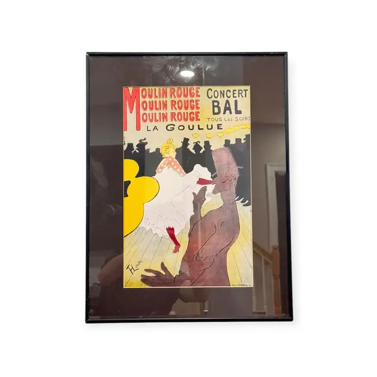
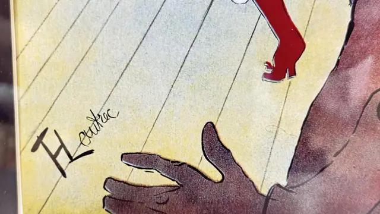

Paintings & Prints
Moulin Rouge La Goulue Poster, HLautrec, Signed, Framed, 1891
HLautrec · design 1891; this impression later 20th century
Price Upon Request


About the Item
HLautrec. La Goulue kicks up a white froth of petticoats at the centre, her red-spotted bodice and blonde topknot bright against a frieze of flat black silhouetted spectators. In the foreground the grey-mauve rubbery profile of her partner Valentin looms, hands raised, while three yellow globe lamps float behind. The lettering block at the top repeats 'MOULIN ROUGE' three times in red over 'LA GOULUE', with 'CONCERT / BAL / TOUS LES SOIRS' at the right. Flat poster colour - red, yellow, black and cream - with no modelling. Medium: colour lithograph poster (later printing or reproduction). Signed lower left, printed within the design, reading "HLautrec". Inscribed on the reverse or mount: MOULIN ROUGE MOULIN ROUGE MOULIN ROUGE; CONCERT; BAL; TOUS LES SOIRS. Condition: Strong room reflections in the glass. No visible tears or foxing.
Details
- Creator:
- HLautrec
- Creation Year:
- design 1891; this impression later 20th century
- Dimensions:
- Height: 21.75 in (55.24 cm)
Width: 16.25 in (41.27 cm)
outside of frame - Medium:
- colour lithograph poster (later printing or reproduction)
- Period:
- 19Th
- Condition:
- Offered in the condition shown in the photographs.
- Reference Number:
- VO-84
- Documentation:
- no certificate photographed
- Gallery Location:
- MOULIN ROUGE MOULIN ROUGE MOULIN ROUGE; CONCERT; BAL